Utilitats
Aturada programada
Ens permet programar quna volem que s’aturi un ordinador
Una altra manera de programar l’aturada és amb el cron. Per exemple: volem que els ordinadors s’aturin a les 22:45. Llavors tenim la següent línia:
45 22 * * * /sbin/shutdown -h now
que vol dir: minut hora dia-del-mes mes dia-de-la-setmana comanda
asterisc significa qualsevol valor. La comanda és shutdown que es troba en el directori /sbin, i l’opció -h vol dir halt (atura) i l’opció now vol dir “en aquest mateix moment”.
HFS Intercanvi de fitxers en una xarxa local
HFS és una aplicació que ens crea un servidor de fitxers al nostre ordinador de manera molt senzilla. Tot i ser una aplicació de windows la podem executar i és plenament operativa en linux mitjançant el wine.
Perquè ens pot servir? per repartir als nostres alumnes qualsevol document, duna manera senzilla, i sense necessitat de connexió a internet, però si a la xarxa local.
Anem a veure com funciona. Primer el descarregarem de la web del seu autor: http://www.rejetto.com/hfs/
Tot seguit el posem en funcionament, prement el botó dret a sobre i triant la opció “Obre amb wine”.
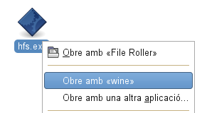
| S’obre una finestra on ens hem de fixar amb algunes dades, hi ha una adreça web del tipus http://127.12.34.56:8080, d’aquesta adreça és important el 8080, que és el port. |
| A sota tenim la finestra partida en dues parts a l’esquerra hi podem afegir els fitxer que volem compartir amb els alumnes, tant sols premen el botó dret a sobre i cercant-lo al nostre ordinador. |
| Per acabar ens cal saber la Ip del nostre ordinador, que és un nombre únic per la nostra màquina, és important que sigui visible per els alumnes, per trobar-la hem d’obrir un terminal (Botó dret a sobre l’escriptori) i escriure la instrucció /sbin/ifconfig. Aquí ens surt molt de text, hem de buscar els números que hi ha al costat de inet addr. Hem de tenir en compte si ens connectem amb cable o amb wi-fi, si és amb cable utilitzarem l’adreça que hi ha a continuació del eth0, i si estem connectats amb wi-fi, utilitzarem l’adreça que hi ha a continuació de wlan0.D’aquesta finestra hem de cercar una numeració que sol ser 192.168.x.x |
| Als nostres alumnes haurem de donar l’adreça que trobem seguida del port. Per exemple ens ha sortit una IP inet addr 192.168.1.30, i abans hem vist que ens ha sortit el port 8080, per tant els alumnes han d’escriure al seu navegador 192.168.1.30:8080Tindran accés al fitxer que nosaltres hem compartit amb ells i el podran descarregar sense problema. |
Gràcies a Valentí Ferrer, per donar-me a conèixer aquesta eina.
Clonezilla
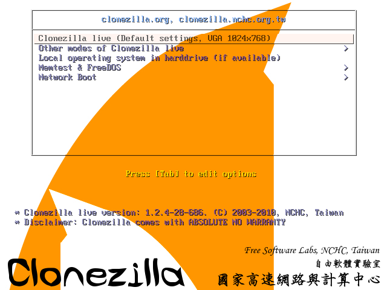
Clonezilla, és un conjunt d’aplicacions que ens permet clonar, fer una còpia exacta d’un ordinador. És lliure i reconeix molts formats fat, fat32, ext2, ext3, …
Tot i tenir un entorn no massa agradable, fa perfectament la seva funció de manera adequada, i eficient.
Les còpies les podem guardar a un disc connectat via USB, a la xarxa, …
És una distribució live, que podem executar des de un CD o bé des de una USB. També ens permet arrancar un ordinador des de la xarxa.
Instalar-lo en una USB
Per executar-lo des de una USB, hem de fer que aquesta arrengui el sistema operatiu, anem a veure les passes que hem de seguir. Suposem que tenim una memòria USB, d’uns 200 MB, formatada amb FAT32.
Primer descarregarem la última versió estable de Clonezilla de la seva pàgina web. Descarrega clonezilla. Recordem que hem de baixar la versió comprimida Zip.
Desempaquetem el clonezilla i el copiem a dins de la memòria USB. Ho podem fer amb el Nautilus mateix.
Per seguir hem de saber quina unitat li ha assignat el linux a aquesta memòria. Recordem que per veure les unitats muntades ho hem de fer des de un terminat, amb la instrucció mount. (A la Linkat Aplicacions → Sistema → Terminal→ Terminal).
En el meu cas obtinc una línia com la següent: /dev/sdb1 on /media/disk-2 type vfat (rw,nosuid,nodev,shortname=lower,flush,utf8,uid=1000)
Ara des de el mateix terminal anem a la carpeta linux dins de utils on trobarem el que ens cal per convertir la clau amb autoarrencable.
Podem escriure al terminal: cd /media/disk-2/utils/linux/
Recordeu que si premeu tabulador us completa les carpetes que ell reconeix. També que el /media/disk-2 és la carpeta per accedir als arxius de la USB, que hem trobat anteriorment, i per tant pot varia d’un ordinador a un altra.
Ara al terminal tindrem alguna cosa similar a: usuari@ordinador:/media/disk-2/utils/linux>
Aquí podem observar que hi ha un fitxer anomenat: makeboot.sh, amb ls
Ara tant sols ens queda executar-lo, per tant escriure: bash makeboot.sh /dev/sdb1
Recordem que el /dev/sdb1, l’hem trobat abans que hem mirar on havia montat la clau i això pot variar d’un ordinador a un altra.
I ja tenim la USB, preparada per iniciar-se, i executar el clonezilla.
Gnome Schedule
Algun cop hem de fer que s’executin sempre en un moment determinat, còpies de seguretat, …Normalment això es fa editant el fitxer crontab, amb la instrucció crontab -e. Fan servir una terminologia pròpia que podem trobar per exemple a la wikipedia. Cron.Hem de tenir en compte però, el cron, no executa de manera directe programes gràfics, per exemple firefox, vlc, gedit, … sinó que que es molt adequat per comandes unix.
Si hem d’executar programes gràfics he trobat aquesta aplicació que ens ho facilita, això no treu que també la poguem utilitzar per fer les comandes habituals que faríem amb el cron.
Instal·lació
En el cas d’ubuntu el trobeu al repositori.El podem descarregar des de la seva pàgina web i compilat seguin les instruccions del fitxer install. Gnome-Schedule.
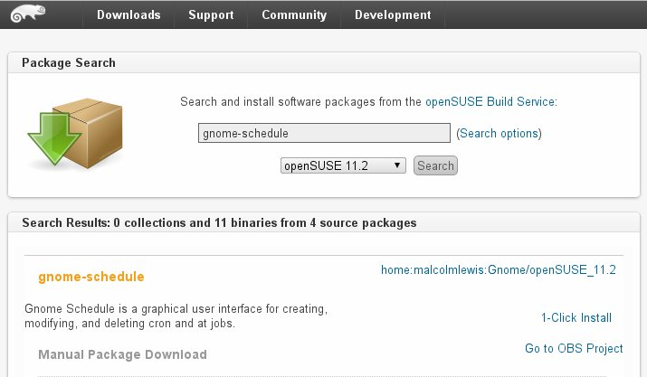
Una opció més senzilla és anar al nostre repositori de la distribució i fer la instal·lació, si tenim la Linkat o Opensuse, és el mateix, anirem a la pàgina de descàrregues de paquets i la buscarem, tenin en compte que hem d’activar que busqui al les pàgines personals (Search options – Include users’ home projects). Triem la nostra versió i el nom del programa. Premem a la instal·lació i posem la contrasenya de root.
Paquets de OpenSuse
Posada en funcionament
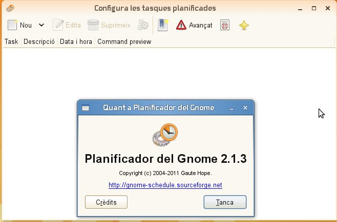
El podem trobar a Sistema -> Monitos -> Sheduled task, o be a un terminal escrivim gnome-schedule, i es posarà en funcionament el programa.
A partir d’aquí només hem de tenir clar que volem fer.
Quan premem sobre NOU, s’obre una nova finestra i ens dona a triar tres opcions, que per ordre són:
– Una tasca què és repeteixi periòdicament.
– Una tasca què és faci tant sols un cop.
– Una tasca predefinida en una plantilla.
Cada opció ens portarà a una altra finestra amb les opcions corresponents.
| Tasca periòdicaAquí li podem omplir les diferents opcions:Posar un nom descriptiu de la feinaPosar la comanda que volem executar. Per exemple si volem posar en funiconament el Firefox, podem escriure senzillament firefox, o bé posar tota la ruta del programa normalment /usr/bin/firefox.Tot seguit triem el tipus d’aplicació, que s’executi:per defecte en un terminal (Default behaviour).per defecte esn un terminal però sense sortida (suppres output).Una aplicació gràfica (X aplication)Una aplicació gràfica sense sortida (X aplication suppres output).A sota podem triar cada cuan s’ha d’executar, cada hora, minut dia, … o bé amb avançat a un moment determinat.Per últim triem si el colem afegir a una plantilla o acceptem i la posem programada. |
| Tasca d’un sol copEn aquest cas és similar a l’anterior, però nomes podem fixar un moment per executar-se.Com abans hem d’omplir:Un nom descriptiu de la tasca.Hem de marcar si és una aplicació gràfica, sinó no cal marcar res.El moment que volem que s’executi la tasca.La tasca que volem fer.Les plantilles és per si volem guardar una instrucció complicada que hàgim de fer esporàdicament. Realment molt senzill, i molt útil per programes gràfics. |
Aplicacions gràfiques amb crontab
Es molt més rebuscar que el programa anterior, perì si ho voleu provar…
No se si mai heu intentat executar un programa gràfic amb el cron a linux, suposo que us heu trobat amb el problema que no es pot directament.
Fins ara havia trobat una solució, amb un programa anomenat Gnome Schedule, però li fa falta el PyGTK >= 2.3 i el Python, entre d’altres, no sempre disponibles.
Cercant per internet, semblava que havia de ser una cosa senzilla, tant sols haviem de crear una línia similar a:
export DISPLAY=:0.0 instrucció
Però la cosa no funcionava, i per tant no era una solució viable.
Be després d’una recerca, més intensiva, vaig trobar que feia falta una instrucció una mica més complicada, on entre d’altres hi havia:
XAUTHORITY=/var/run/gdm/auth-for-josepm-Z5TYnz/database
El problema era que el codi, que surt darrera de l’usuari, Z5TYnz, canvia cada cop que s’entra a l’usuari o es posa en funcionament l’ordinador. Així que era qüestió de veure com treure aquest valor. Al final és una manipulació d’una cadena de caràcters, i de tot plegat va sortir el següent script, en que he generalitzat amb algunes suposicions:
- A l’ordinador hi ha tant sols un usuari connectat.
- Si hi ha més d’un usuari s’enviarà al primer que surt de la llista amb users.
L’script, d’exemple, posa en funcionament el firefox amb una pàgina web en concret, canviat això podeu obrir qualsevol altra programa.
Aquest script va junt a una línia de crontab a /etc. Editem /etc/crontab. Suposem que el volem executar a les 10 del matí cada dia i l’hem anomenat grafics i l’hem posat a dins de la carpeta scripts.
* 10 * * * root /opt/scripts/grafics
Ni que dir que, el fitxer grafics ha de tenir drets d’execució: chmod a+x grafics
Més informació sobre el cron:
Be tot seguit l’script, deixaré amb remarcat la part que es pot canviar:
###################################################################################
#!/bin/bash #
# Script per executar un programa gràfic des del cron #
# #
# Llicència: GPL v3.0 #
# Autor: Josep M Sardà. IES RAMON TURRÓ I DARDER.Departament d’educació. #
# Col·laboració David Agüera. #
# Versió: 1.0 #
# Data: 29-11-2012 #
###################################################################################
# Cerquem l’usuari connectat ######################################################
export connectat=`sh -c “users”`
export connectat=${connectat%%[[:space:]]*}
# Cerquem el codi d’autorització per aquest usuari#################################
export usuari=`sudo ls /var/run/gdm/auth-* | grep $connectat`
export usuari=${usuari/:/}
export usuari=”XAUTHORITY=$usuari/database”
# Executem el programa firefox i obre una web #################################
sh -c “DISPLAY=:0; $usuari; XAUTHLOCALHOSTNAME=localhost; export DISPLAY; export XAUTHORITY; export XAUTHLOCALHOSTNAME; firefox www.iesmalgrat.cat“
Problemes amb la codificació de caràcters
Us ha passat mai que al copiar o traslladar informació us queden els documents amb caràcters estranys?
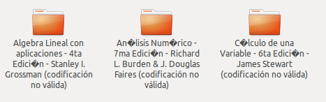
Si són pocs ho podem corregir a ma, però si són molts ho podem automatitzar des del terminal.
Ens cal un programa anomenat “convmv”
fem la instal·lació en funció de la distribució linux:
sudo zypper in convvmv
o bé
sudo apt-get install convmv
un cop el tenim instal·lat ens posem a la carpeta on tenim el problema i executem:
find . -name ‘?’ | xargs convmv -r –notest -f cp850 -t UTF-8
Un cop hagi acabat haurà corregit tots els noms!
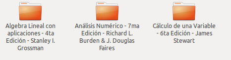
Informació extreta de: http://onoametal.wordpress.com/2012/09/24/corregir-caracteres-extranos-e…
Sincronització i còpies de seguretat
Sincronitzar o fer còpies de seguretat. Sempre és convenient tenir una còpia de seguretat de la informació que ens és útil.Una manera pot ser anar mirant que hem modificat, i copiant a un altra disc dur, però aquesta feina pot ser molt pesada, per tant tenim programes que ens ho fan automàticament.Un d’aquests programes és el Grsync, que és un entorn gràfic de rsync, una instrucció de línux per fer còpies de seguretat.És una eina molt senzilla de instal·lar i de utilitzar, aquí teniu un breu tutorial del seu ús més senzill.
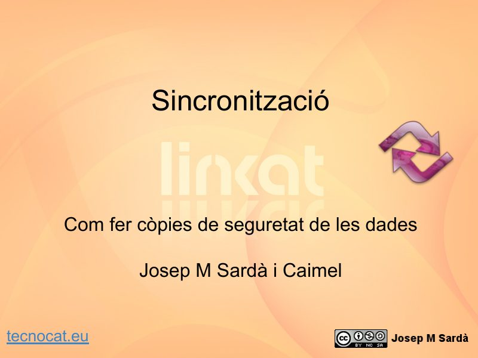
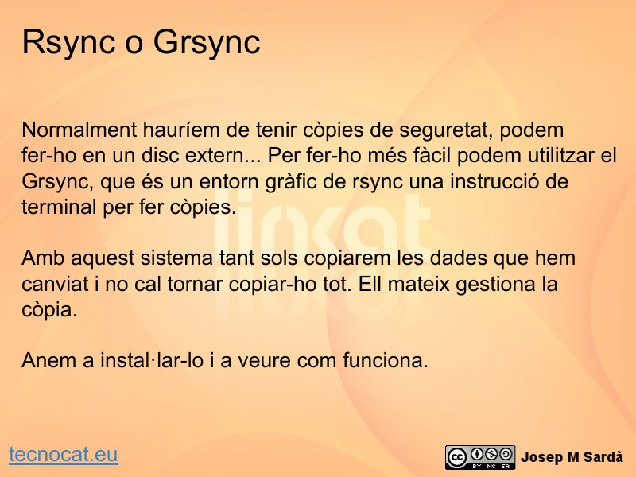
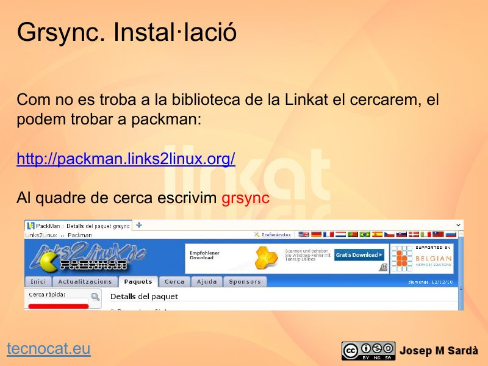
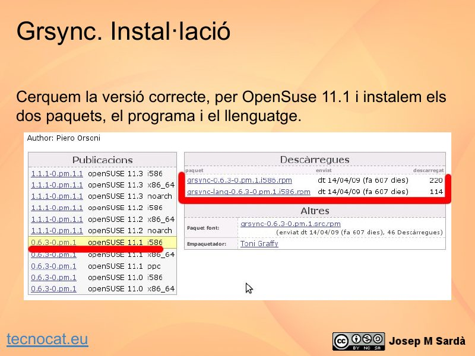
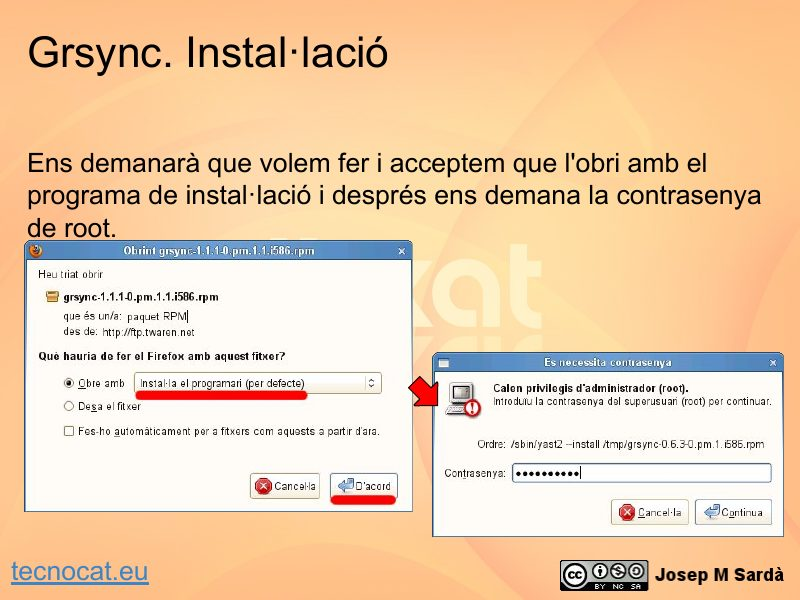
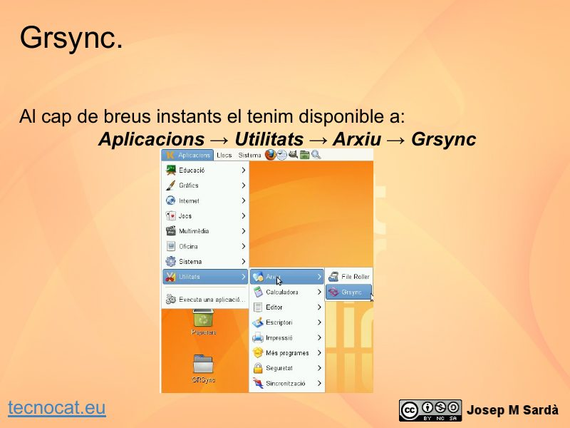
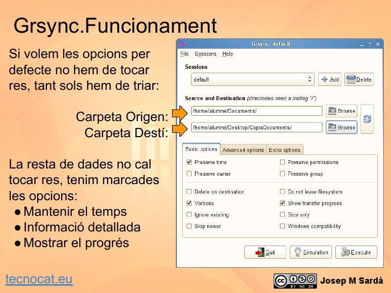
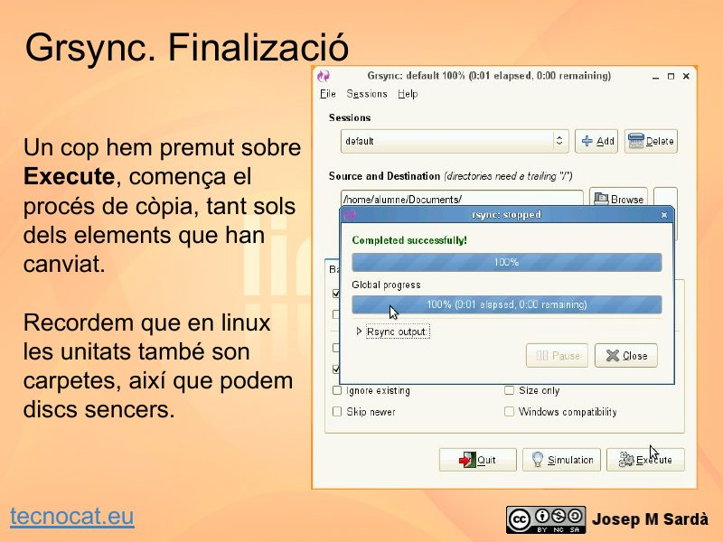
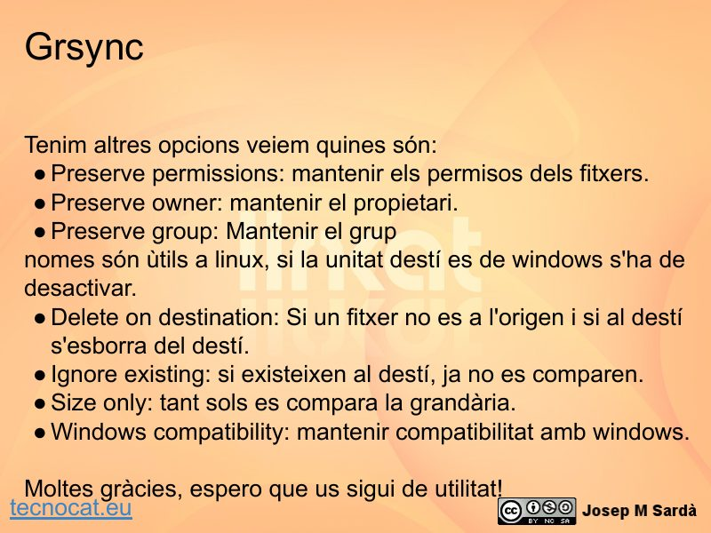
Manual rsync: http://samba.anu.edu.au/ftp/rsync/rsync.html